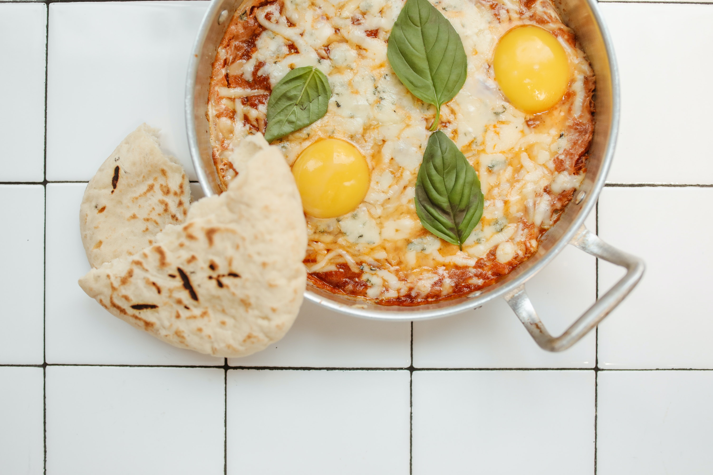
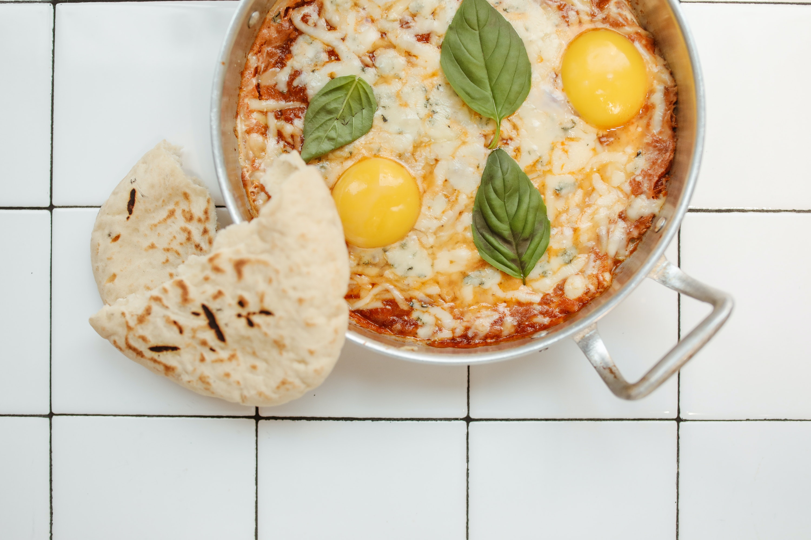

Shakshuka is a North African and Middle Eastern meal of poached eggs in a simmering tomato sauce with spices.
It's easy, healthy and takes less than 30 minutes to make.
Watch the video above to see how quickly it comes together!
Directions
Heat a deep, large skillet or sauté pan on medium.
Slowly warm olive oil in the pan. Add chopped onion, sauté for a few minutes until the onion begins to soften.
Add garlic and continue to sauté till mixture is fragrant.
Add the bell pepper, sauté for 5-7 minutes over medium until softened.
Add tomatoes and tomato paste to pan, stir till blended. Add spices and sugar,
stir well, and allow mixture to simmer over medium heat for 5-7 minutes till it starts to reduce.
At this point, you can taste the mixture
and spice it according to your preferences.
Add salt and pepper to taste, more sugar for a sweeter sauce, or more cayenne pepper
for a spicier shakshuka (be careful with the cayenne... it is extremely spicy!).
Crack the eggs, one at a time, directly over the tomato mixture, making sure to space
them evenly over the sauce. I usually place 4-5 eggs around the outer edge and 1 in the center.
The eggs will cook "over easy" style on top of the tomato sauce.
Cover the pan. Allow mixture to simmer for 10-15 minutes, or until the eggs are cooked and the
sauce has slightly reduced. Keep an eye on the skillet to make sure that the sauce doesn't reduce
too much, which can lead to burning.
Some people prefer their shakshuka eggs more runny. If this is your preference,
let the sauce reduce for a few minutes before cracking the eggs on top-- then, cover the
pan and cook the eggs to taste.
Garnish with the chopped parsley, if desired. Shakshuka can be eaten for breakfast,
lunch, or dinner. For breakfast, serve with warm crusty bread or pita that can be dipped
into the sauce (if you're gluten-intolerant or celebrating Passover, skip the bread).
For dinner, serve with a green side salad for a light, easy meal.

 
